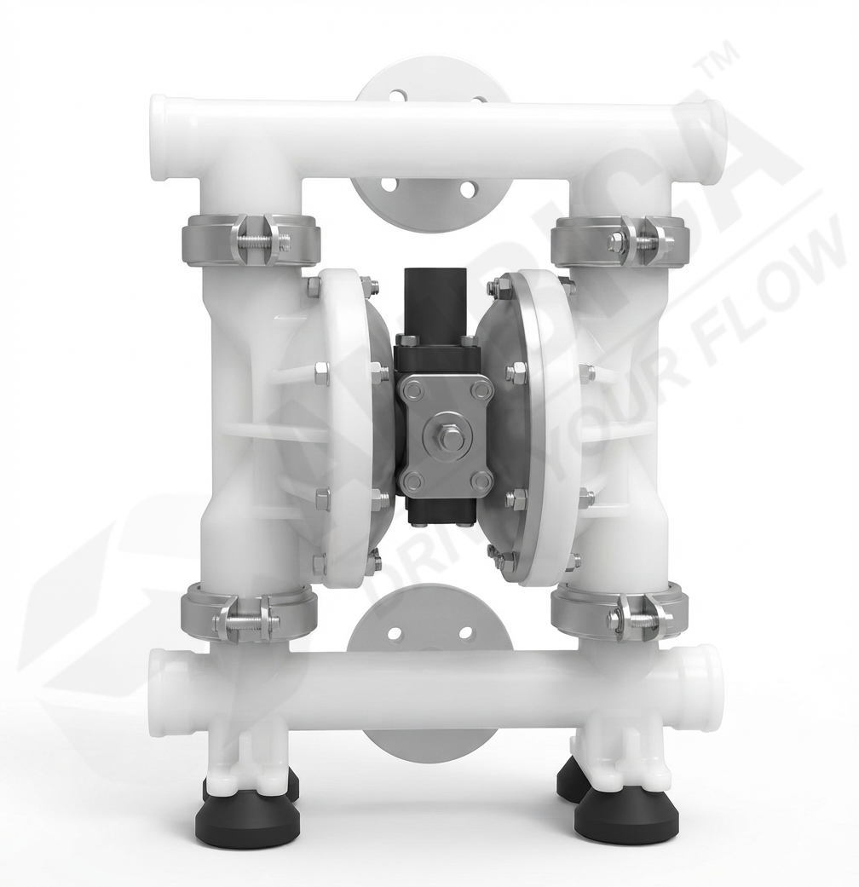
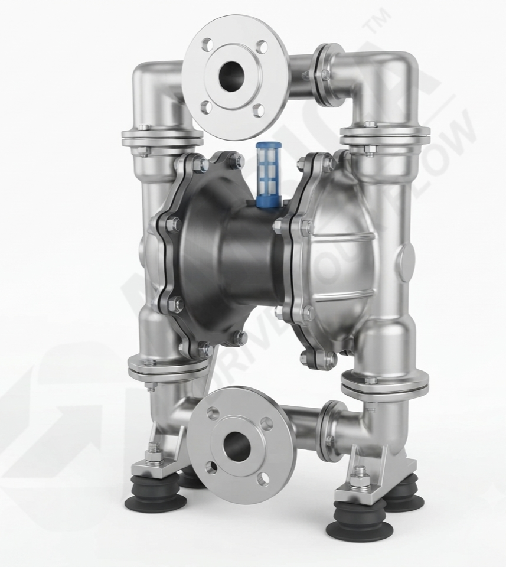

↗
Industrial Fluid Transfer
Evaluate the pump for liquid-transfer duties where the required flow and connection arrangement match the selected model.

PP / PVDF BODY
SS-316 / ALUMINIUMThe 1 1/2 inch Air Operated Double Diaphragm Pump is designed for industrial fluid-transfer applications where process connection, required flow and construction materials must match operating conditions.
Plastic and metal body configurations are available as listed options. The suitable construction and operating limits should be confirmed according to the fluid and application requirements.
Please confirm the current datasheet and model-specific specifications with Ambica Machine Tools before ordering.
A process pump configuration to evaluate according to piping connections, transfer requirements and material compatibility.
The 1 1/2 inch AODD pump is part of the air-operated diaphragm pump range from Ambica Machine Tools. The pumping cycle is driven by compressed air, which operates the double-diaphragm mechanism to move liquid through the pump.
This model is intended for applications where a 1 1/2 inch connection arrangement is required. Confirm the exact connection standard and dimensions against the current product drawing before integrating the pump into a process line.
Listed construction choices for this product range include Polypropylene (PP), PVDF, Stainless Steel 316 (SS-316) and Aluminium. The availability of each material for this specific model should be confirmed with the supplier.
To help identify a suitable configuration, share the fluid name, concentration, operating temperature, required flow, suction and discharge conditions, and available compressed-air supply.
Technical specifications and performance details of the 1 1/2 Inch Air Operated Double Diaphragm Pump.
| Product | 1 1/2 Inch Air Operated Double Diaphragm Pump |
|---|---|
| Size | 1 1/2" BSP (40 MM) |
| Maximum Flow Rate | 270 LPM |
| Material of Construction | PP, PVDF, SS-316, Aluminium |
| Inlet Port | 38.10 MM (1 1/2" BSP) |
| Discharge Port | 38.10 MM (1 1/2" BSP) |
| Air Inlet | 1/2" BSP |
| Air Exhaust | 12.70 MM (1/2" BSP) |
| Suction Lift - Dry | 4.57 M (15 FT) |
| Suction Lift - Wet | 7.62 M (25 FT) |
| Teflon - Dry | 3.05 M (10 FT) |
| Teflon - Wet | 6.09 M (20 FT) |
| Maximum Particle Size | 4.76 MM (0.188") |
Technical note: Confirm the current datasheet, operating conditions and model configuration with the manufacturer before procurement or installation.
Confirm that the selected pump configuration meets the process requirements before use.
Evaluate the pump for liquid-transfer duties where the required flow and connection arrangement match the selected model.
Consider applications where compressed air is used to drive the pump. Confirm the available air supply and operating range.
Review the listed plastic and metal body options against the chemical and temperature requirements of the fluid.
Check the pump connections, pipework, installation arrangement and system resistance before integrating the unit.
Discuss start-stop frequency, operating conditions and compressed-air availability when evaluating the application.
Assess connection standards, suction conditions, discharge pressure and material compatibility for the installation.
Review these design and selection points when discussing the 1 1/2 inch AODD pump configuration.
The pump operates through a compressed-air driven diaphragm mechanism.
Confirm the actual port dimensions and connection standard against the product drawing.
The listed maximum flow is 270 LPM. Actual performance depends on operating conditions and the pump configuration.
Ask about PP, PVDF, SS-316 and Aluminium availability for this specific model.
Verify the 1/2 inch BSP air inlet, supply pressure and air consumption from the datasheet.
Confirm the dry and wet suction-lift values applicable to the selected configuration.
The listed maximum particle size is 4.76 mm. Confirm suitability for the fluid and solids involved.
Select the materials and operating conditions to suit the actual process duty.
Confirm the material availability for this model and the compatibility of all wetted parts with your process fluid.
A listed thermoplastic construction option. Check chemical compatibility and temperature limits for the intended liquid.
A listed fluoropolymer construction option. Confirm suitability against the exact chemical, concentration and operating temperature.
A listed metal construction option. Verify corrosion resistance and compatibility for the specific process fluid.
A listed metal body option. Confirm that the fluid and surrounding environment are suitable for aluminium construction.
Share your process details so the pump size, construction and operating requirements can be reviewed before you finalise your selection.
Discuss whether the 1 1/2 inch configuration matches your required flow and connection.
Compare the available construction choices against your fluid and process conditions.
Review port sizes, air supply requirements, suction lift and operating limits.
Provide the fluid details and duty requirements to discuss a suitable configuration.
Request the latest datasheet and installation information for this model.
Consider pump selection alongside the requirements of your process line and equipment.
Answers to common questions about selection, materials and technical information.
An AODD pump is an air-operated double diaphragm pump. The 1 1/2 inch model designation refers to the nominal size; confirm the exact connection dimensions and standard against the current datasheet.
The listed maximum flow rate for the 1 1/2 inch model is 270 LPM. Actual flow depends on air supply, discharge pressure, fluid properties and operating conditions.
The product range lists Polypropylene (PP), PVDF, Stainless Steel 316 (SS-316) and Aluminium options. Confirm which options are available for this exact model.
The listed process connection is 1 1/2 inch BSP, with a 1/2 inch BSP air inlet. The listed air exhaust is 12.70 mm. Confirm all dimensions against the current datasheet.
Suitability depends on the exact chemical, concentration, temperature and construction of all wetted parts, including diaphragms and seals. Confirm compatibility before use.
Share the fluid name and concentration, temperature, required flow, suction and discharge conditions, available air supply, connection standard and any solids present.
Use the enquiry link on this page to contact Ambica Machine Tools for pricing, current specifications and product availability.
Share your fluid and operating details to discuss the 1 1/2 inch AODD pump with Ambica Machine Tools.